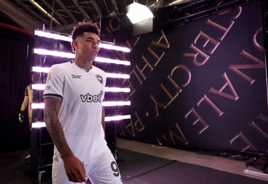

Chelsea have completed the signing of Jamie Gittens, with the Borussia Dortmund winger joining on a contract until 2032 in a deal expected to be around £55m. The England Under-21 international has made more than 100 appearances for the Bundesliga club and has featured in the Champions League.
“It’s a great feeling to join such a big club as Chelsea ,” Gittens told the club’s website. “I can’t wait to learn from everyone in the team and to push myself to the max here.”
Chelsea identified Gittens, who also had interest from Bayern Munich, as a major target in January and have been negotiating with Dortmund over the 20-year-old this summer.
Gittens moved to Germany from Manchester City in 2020 and made his debut late in the 2021-22 season, making 20 appearances and scoring three goals. The following season he registered 10 goal contributions in 34 games across all competitions. Last season he had 17 goal contributions before featuring for Dortmund in the Club World Cup in the United States.
Brighton have confirmed the signing of Belgian defender Maxim De Cuyper from Brugge.Photograph: PA Wire/PA
Brighton have confirmed the signing of the Belgian defender Maxim De Cuyper from Brugge. The 24-year-old has signed a five-year contract, with the deal worth a reported £17.5m, and is set to link up with his new team-mates for the start of pre-season training this weekend.
“Maxim is a creative left-back who has great experience at Champions League level as well as in the domestic league,” said Brighton’s head coach Fabian Hurzeler. “He has a great reputation for creativity and has shown his ability across different positions, although we primarily see him challenging for a left-back spot with us.
“Maxim arrives having won the league and cup in recent years with Brugge, so it is great that despite his young age, he clearly has a winner’s mentality. We are excited to work with him.” De Cuyper made his senior Belgium debut in June 2024, and has won 10 caps, scoring three goals.
Nottingham Forest have signed the Brazil striker Igor Jesus on a four-year deal from Botafogo. The 24-year-old has recently returned from the Club World Cup, where he scored twice, including the winner against Paris Saint-Germain . He was selected for Brazil’s World Cup qualifiers in October and November, scoring against Chile on his debut.
Igor Jesus at the Club World Cup.Photograph: Sean M Haffey/Fifa/Getty Images
The arrival of Jesus boosts Forest’s frontline options, though Nuno Espírito Santo could lose Anthony Elanga , who is expected to join longtime admirers Newcastle in a deal worth about £55m. Forest are looking to PSV’s Johan Bakayoko as a replacement.
Jesus, whose nickname is “Little Frog”, said: “I’m really happy to be part of this new story, especially at a club like Nottingham Forest . I didn’t have to think twice about the offer. I am delighted to be coming here and hope to do some great work.”
The versatile Forest full-back Neco Williams has signed a new deal until 2029, while Ola Aina is also expected to commit his future to the club.
Manchester United have signed the Paraguay youth international Diego León. The 18-year full-back is their second signing of the summer after the arrival of the Wolves forward Matheus Cunha . León joins from Paraguayan club Cerro Porteño, where he played 33 games and scored four goals.